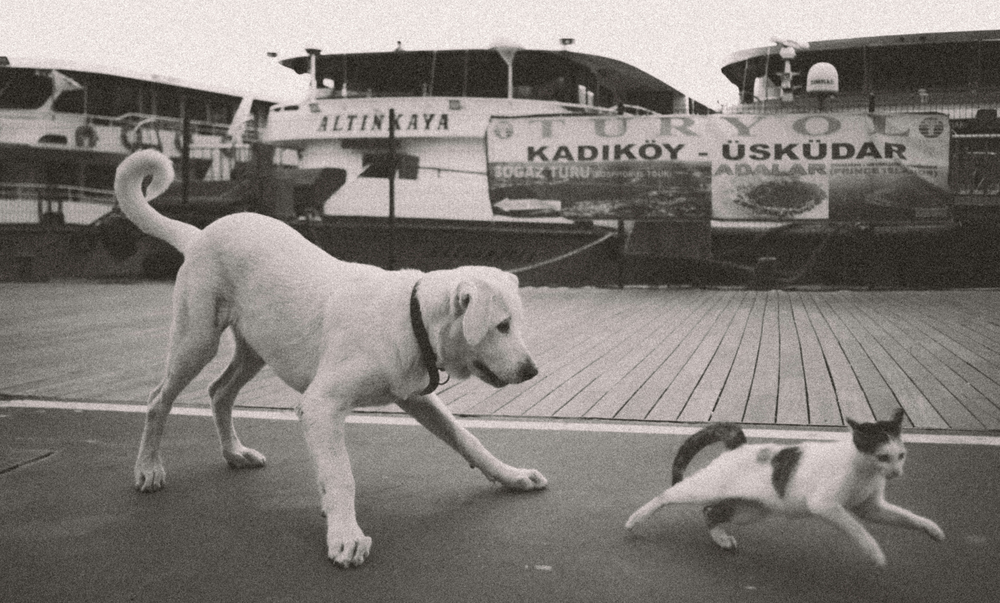

Love at First Paws
Visit Us To Know More
Visit Us To Know More
At Love at First Paws, we believe in the transformative power of pet adoption. Every year, millions of cats and dogs end up in shelters, waiting for someone to give them a second chance at happiness. Our mission is to facilitate this life-changing connection between pets and families.
Whether you’re looking for a playful kitten to brighten your days or a loyal dog to join your adventures, Love at First Paws is here to help you find the perfect match. Explore our profiles of cats and dogs waiting for loving homes, learn about our adoption process, and join us in making a difference in the lives of these wonderful animals.
Every year, millions of cats and dogs are in need of homes. By adopting, you are giving a deserving animal a second chance at life.
By adopting, you support animal shelters and rescue groups, allowing them to continue their crucial work in caring for and rehoming pets.
Adoption fees are generally lower than the costs associated with purchasing a pet from a breeder or pet store. Plus, many adopted pets come already vaccinated, spayed/neutered, and microchipped.
Adopting a pet makes a significant impact on the overpopulation crisis in animal shelters. You’re not just gaining a pet; you’re making a positive change in the world.
